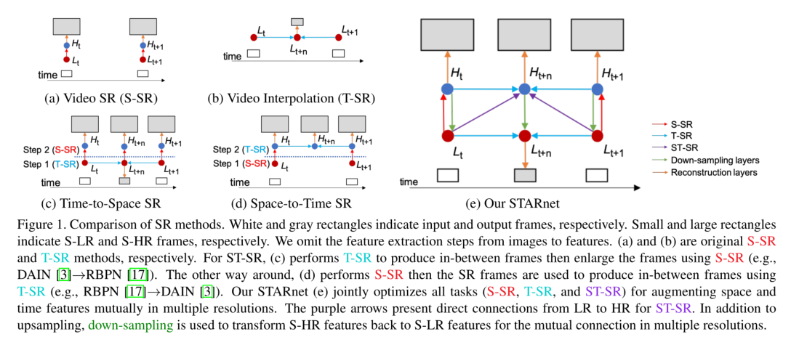
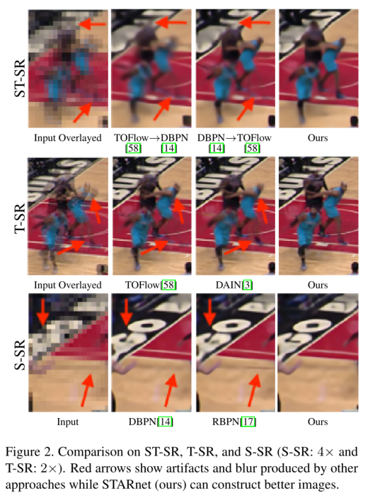
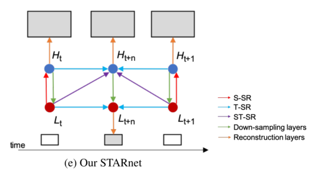
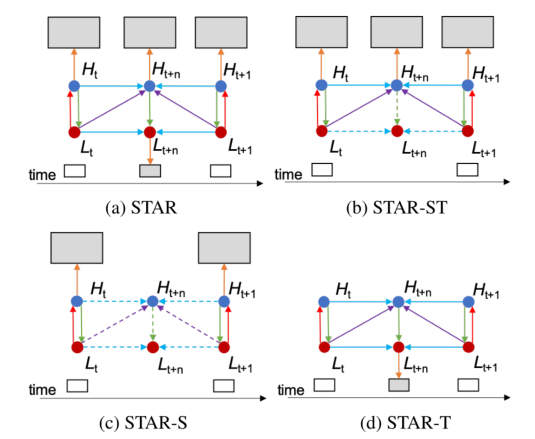
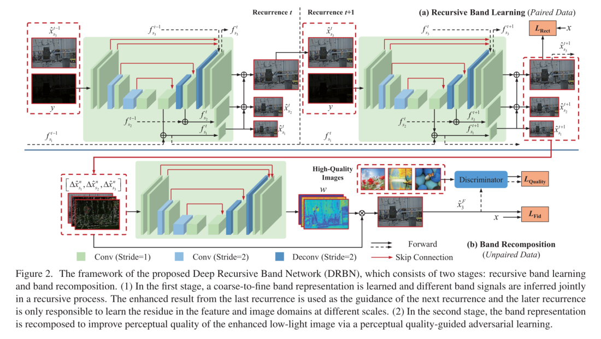

论文阅读-0x07
论文的阅读笔记：
《 Space-Time-Aware Multi-Resolution Video Enhancement 》[code] , CVPR 2020
《 From Fidelity to Perceptual Quality: A Semi-Supervised Approach for Low-Light Image Enhancement 》，CVPR 2020
Space-Time-Aware Multi-Resolution Video Enhancement
Abstract
- 时空感知多分辨率视频增强（Space-Time-Aware Multi-Resolution Video Enhancement）
- 时空超分辨率（space-time super-resolution，ST-SR）问题
- 其目标是将低帧率的低空间分辨率视频转换为高空间和时间分辨率的视频
- 增加视频帧的空间分辨率，同时对帧进行插值以提高帧速率
- 现在的方法一次只能处理一方面
- 作者提出的STARnet 能够在空间和时间上同时处理，能够利用时间和空间之间的相互信息关系:更高的分辨率可以提供更多关于运动的详细信息，更高的帧率可以提供更好的像素校准信息
- 在ST-SR问题中，该模型中生成潜在的低分辨率和高分辨率表示的组件可用于微调针对空间SR或时间SR的专用机制

- 白色和灰色矩形分别表示输入和输出帧。小矩形和大矩形分别表示S-LR和S-HR帧。省略了从图像到特征的特征提取步骤
- (a)和(b)分别为原始的S-SR和T-SR方法
- 对于ST-SR， ©执行T-SR生成中间帧，然后使用S-SR放大帧(如DAIN→RBPN)
- 反过来，(d)执行S-SR，然后SR帧被用于使用T-SR生成中间帧(例如，RBPN→DAIN)
- STARnet (e)联合优化了所有任务(S-SR、T-SR和ST-SR)，以便在多个分辨率下相互增强空间和时间特征
- 紫色箭头表示ST-SR从LR到HR的直接连接
- 除了上采样之外，还使用下采样将S-HR特性转换回S-LR特性，以便在多种分辨率下实现相互连接
- 现有的SR方法对空间和时间上采样是独立的
- 空间SR (S-SR)采用多输入帧(即多图像SR和视频SR)，通过对相似帧进行空间对齐，将空间低分辨率(S-LR)帧超分辨为空间高分辨率(S-HR)帧（上图a）
- 时间SR (T-SR)旨在通过在帧之间进行时间插值，将输入帧的帧率从短时低分辨率(T-LR)帧提高到短时高分辨率(T-HR)帧（上图b）
- 可以通过交替地、独立地使用任何基于学习的S-SR和T-SR来执行ST-SR
- 在S-LR上构造中间帧，然后用S-SR生成它们的SR帧（上图c）
- 对输入帧进行空间上采样S-SR，然后进行T-SR构造其中间帧（上图d）
- 然而，空间和时间显然是相关的。这种关系允许我们联合使用空间和时间表示来解决人类和机器感知的视觉任务
- 直观地说,更准确的运动可以在更高的空间表现（高分辨率）
- 反过来,更高的时间表示(例如,更多的帧的表示内容很相似)可以用来在时间帧中准确地提取更多的空间上下文信息在多图像SR和视频SR
- 为此作者提出了空间感知的多分辨率网络，即STARnet
- STARnet通过为ST-SR提供从LR到HR的直接连接，显式的合并了空间和时间表示，以便在LR和HR空间中互相增强S-SR和T-SR（上图e）
- 这个网络还提供了可扩展性，可以对同一个网络进行ST-SR、S-SR或T-SR的进一步优化（下图）

- ST-SR、T-SR、S-SR比较(S-SR: 4倍，T-SR: 2倍)红色箭头表示其他方法产生的伪影和模糊，而STARnet(我们的)可以构建更好的图像
- 该文的主要贡献
- 新的基于学习的ST-SR方法，它训练一个端到端的深度网络来共同学习空间和时间上下文，从而形成作者所称的时空感知多分辨率网络(STARnet)。该方法优于S-SR和T-SR方法的组合
- 在多个分辨率上联合学习，以估计在视频中观察到的大的和细微的运动
- 在S-HR帧上执行T-SR很难估计大尺度运动，而在S-LR帧上对细微的运动进行插值则很困难
- 作者的联合学习通过在多个分辨率之间直接横向连接来呈现丰富的多尺度特征，从而解决了这两个问题
- 一种新的S-SR和T-SR的观点优于直接的S-SR和T-SR
- 与直接的S-SR和TSR方法相比，作者的S-SR和T-SR模型是通过finetuning STAR获得的
- 这种来自STAR的微调允许S-SR和T-SR模型被ST-SR学习扩展
- 通过插入帧和输入帧来增强S-SR
- 通过在S-HR中观察到的微妙运动以及在S-LR中观察到的大运动来增强T-SR
- Space SR
- 通过更好的上采样层，残差学习，反投影，递归层和渐进式上采样来拓展帧，增强分辨率
- 在视频SR中，时间信息通过帧级联和递归网络保留
- Time SR
- T-SR或视频插值，主要通过合成实现
- 其中T-SR使用一个流运动的形象，不过流图像会遭受模糊和大运动的困扰
- 可以通过对输入的S-HR帧进行空间缩减，然后分别在缩减的S-LR和输入的S-HR帧中提取大而细微的运动
- Space-Time SR
- ST-SR的第一项工作解决了巨大的线性方程，然后从所有LR帧中创建了一个包含所有时空测量值的向量
- 后来，在空间和时间重复的假设下，从单个视频记录中提出了ST-SR
- 但仍存在一些问题，例如方程之间的依赖性，对某些参数的敏感性以及需要更长的视频以提取有意义的时空模式
- 另一种方法是将S-SR和T-SR结合起来，但此方法独立地处理时空的每个上下文。 尚未通过联合学习对ST-SR进行研究。如图1（c）和（d）所示
Space-Time-Aware multiResolution
-
给定两个低分辨率（LR）帧 (Itl,It+1l) ，尺寸为 Ml×Nl
- ST-SR获取时空SR帧 (Itsr,It+nsr,It+1sr) , 尺寸为 Mh×Nh
- 其中0<n<1， Mh>Ml,Nh>Nl
- ST-SR的目的是从{I1l}t=0T得到{Itsr}t=0T+
- 此外，STARnet从 (Itl,It+1l) 计算得到S-LR帧 (It+nl) ，用于在LR和HR上联合学习时空信息
- 双向的密度运动流图
- Ft−>t+1andFt+1−>t ，从 Itl,It+1l 中预计算得到
- Lt∈RMl×Nl×cl 和 Ht∈RMh×Nh×ch 代表S-LR和S-HR在时间t的特征图
-
STARnet主要分为三个阶段
- 第一阶段：初始化
- 在LR和HR上实现了S-SR，T-SR和ST-SR的联合学习，其中T-SR和ST-SR在由“ ST-SR”指示的同一子网中执行
- 四个输入： (Itl,It+1l) 及其双向流图像Ft−>t+1andFt+1−>t
S-SR: Ht+1LtLt+1 Motion: M ST-SR: Ht+n,Lt+nHt=NetS(Itl,It+1l,Ft+1→t;θs)=NetS(It+1l,Itl,Ft→t+1;θs)=NetD(Ht;θd)=NetD(Ht+1;θd)=NetM(Ft→t+1,Ft+1→t;θm)=NetST(Ht,Ht+1,Lt,Lt+1,M;θst)
-
θ表示每个网络中的一组权重
-
通过上采样和下采样以增强SR的特征之后，NetD 对 HtandHt+1 进行缩减，用来更新 LtandLt+1
-
NetM 产生运动特征的表示 ，由双向流计算得到。其输出为流特征图，由CNN学习得到
-
虽然很难直接解释这些特征，但它们旨在帮助 Ft−>t+1andFt+1−>t 之间的空间对齐
-
最后结合所有特征，特征空间中的STAR由 NetST 计算得到
-
NetST 可以同时实现LR和HR上集成的T-SR和ST-SR
-

- NetST ：蓝色和紫色箭头部分
-
阶段1的输出是中间帧的HR和LR特征图 Ht+n,Lt+n
-
第二阶段：Refinement（细化改善）
- 进一步保持循环一致性，以再次细化特征图
- 第一阶段中得到的流特征M，在第二阶段的第一个方程中便使用
- 这使得我们可以得到更可靠的特征图
- 进一步完善，在等式中提取残差特征，用于实践特征的精确空间对齐
t:HtbLtbH^tL^tt+1:Ht+1fLt+1fH^t+1L^t+1t+n:Ht+nfLt+nfHt+nbLt+nbH^t+nL^t+n=NetB(Lt+n,Lt,M;θb)=NetD(Htb;θd)=Ht+ReLU(Ht−Htb)=Lt+ReLU(Lt−Ltb)=NetF(Lt+n,Lt+1,M;θf)=NetD(Ht+1f;θd)=Ht+1+ReLU(Ht+1−Ht+1f)=Lt+1+ReLU(Lt+1−Lt+1f)=NetF(L^t,Lt+n,M;θf)=NetD(Ht+nf;θd)=NetB(L^t+1,Lt+n,M;θb)=NetD(Ht+nb;θd)=Ht+n+ReLU(Ht+n−Ht+nf)+ReLU(Ht+n−Ht+nb)=Lt+n+ReLU(Lt+n−Lt+nf)+ReLU(Lt+n−Lt+nb)
- 第三阶段：Reconstruction（重建）
- 使用进一个卷积层的 Netrec 将四个特征图 (H^t,H^t+n,H^t+1,L^t+n) 转换为对应图像(Itsr,It+nsr,It+1sr,It+nl)
-
训练目标
- 在该训练中
- SHR图像（作为ground-truth）缩小为SLR图像
- T-HR帧（作为ground-truth）缩略为T-LR帧
- 包含三个loss
- 空间损失：在 Itsr 和 It+1sr 上
- 时间损失：仅在 It+nl 上
- 时空损失：仅在 It+nsr 上
- 以上每个损失都由 L1 损失和 Lvgg 组成
- L1 是预测的超分辨率帧和真实帧之间每个像素点的损失
- L1=∑t=0T∥∥Ith−Itsr∥∥1
- Lvgg 是使用预训练的VGG19网络在特征空间中计算得到的
- 为了计算 Lvgg ， Ih 和 Isr 都通过与VGG多个最大池化层（m = 5）的微分函数fm映射到特征空间中
- Lvgg=∑t=0T∥∥fm(Ith)−fm(Itsr)∥∥22
- L1 用于满足标准图像质量评估标准（如PSNR），并经过SR验证
- Lvgg 用于改善视觉感知
- 提供了4种变体

- 原始STAR
- STAR-ST：使用了空间损失和时空损失在HR上，在时空超分辨帧 {Itsr}t=0T+ 上优化网络
- STAR-S：在S-HR上使用空间损失，仅优化了 {Itsr}t=0T
- STAR-T：在T-HR上使用时间损失
- STAR-T可以在两种不同的方案S-LR和S-HR上进行训练
- STAR−THR 使用原始帧（S-HR）作为输入帧，而 STAR−TLR 使用缩小的帧（S-LR）作为输入帧
-
流程优化
- 上文提到了作者使用的预先计算得到的流图像，不过正如很多文章中说到的，两个时间帧之间的大运动会使得视频插帧变得很困难
- 尽管STARnet不仅在S-HR中而且在S-LR中都通过T-SR抑制了这种不良影响，但很难完全解决此问题
- 为了进一步改进，提出了一种简单的解决方案来精炼或去噪流图像，称为流优化（FR）模块
- 令 Ft−>t+1andFt+1−>t 是帧 Itl 和 It+1l 向前和向后的动作
- 在训练中，可以从t时刻的输入帧到ground truth来计算 Ft−>t+n
FR:F^t→t+1F^t+1→t=Netflow(Ft→t+1,It,It+1;θflow)=Netflow(Ft+1→t,It+1,It;θflow)
- 为了减少噪声，使用损失
- Lflow=∥∥∥F^t→t+1−(Ft→t+n+Ft+n→t+1)∥∥∥22+∥∥∥F^t+1→t−(Ft+1→t+n+Ft+n→t)∥∥∥22
- 加上该损失，STARnet的损失为
- LrLf=w1∗L1+w2∗Lflow=Lr+w3∗Lvgg
Experiment
略过吧，，
😝😜😋
这篇论文看的我有点晕，而且是视频处理方面，虽然也能看懂，不过看的也比较费事。上面的很多公式啥的其实也都很简单，也就慢慢读下来了。感觉作者的主要思路就是在视频帧进行超分辨率的时候充分结合了当前时刻和下一刻帧的信息，然后为了减少大运动造成的影响，使用了一种预先计算得到的流图像，从而尽可能地得到物体运动信息，保证插入帧的质量。
关于网络结构和损失函数设计啥的，都还是比较常规的。
比较愁我的就是，论文内容里面插着各种公式，我做笔记又是手打公式感觉太麻烦了，，，不过作者各部分都介绍的还算满详细的
From Fidelity to Perceptual Quality: A Semi-Supervised Approach for Low-Light Image Enhancement
从保真到感官质量：低光图像增强的半监督方法
Abstract
- 曝光不足会导致很多问题：能见度降低、低对比度、噪声强烈和色彩偏置等
- 作者提出了一种半监督学习方法用于弱光图像增强——deep recursive band network (DRBN) ，深度递归波段网络
- 用来恢复一个增强的正常光图像和成对的低/正常光图像的线性波段表示
- 然后基于感知质量驱动的对抗性学习和不成对数据，通过另一种可学习的线性变换对给定频段进行重组，从而获得改进的频段
- 弱光环境下
- 使用一些专业设备可以减轻一些退化，但仍然不可以完全避免噪声的出现
- 如果没有足够的光到达相机传感器，会导致场景信号被系统噪声掩盖
- 如果花费更长的曝光时间来抑制噪声，这将很有帮助，但是这会引入模糊性
- 所以通过软件算法等进行处理，为高级计算机视觉任务做铺垫
- 传统方法
- 直方图均化：通过拉伸动态范围来增强低光图像
- 不过会产生不可预料的光照信息，并且会意外放大噪声信息
- 基于Retinex理论：分别分解和处理图像的两层（即反射层和照明层）
- 深度学习
- 现有的损失函数与人的感知没有很好的匹配，没有捕捉到图像的内在信号结构，导致视觉结果不理想，如色彩分布偏和残留噪声
- EnlightenGAN证明了利用非配对数据进行弱光增强的可行性（其数据集只有低/正常光图像，不必要成对）
- 不过由于没有成对的监督，细节无法恢复，强化结果中仍然存在强烈的噪声
- 全监督方法：在成对监督的情况下进行训练，在训练阶段提供了ground truth
- 用于详细的信号建模，网络更有能力抑制噪声和保留细节
- 无监督方法：从未配对的低/正常光照图像集中提取学习增强映射的知识
- 为此，作者希望能够结合以上两种优点的统一体系结构——构建了一种新的用于弱光图像增强的半监督学习框架
- DRBN 提供一种波段表示形式，以连接从成对数据获得的先验信号保真度和未配对的高质量数据集提取的先验视觉质量（其中视觉图像通过平均意见得分选择）
- 第一阶段（递归波段学习）：对成对的低/正态光图像进行网络训练
- 通过成对的低/正常光图像进行训练来恢复线性波段表示，其估计在递归过程中是互利的
- 然后利用DRBN第一阶段提取的增强图像的频带表示，弥补成对数据的恢复知识与高质量图像数据集提供的感知质量之间的差距
- 第二阶段（波段重组）
- 通过对抗性学习来学习重构波段表示以适应高质量图像的视觉特性
- 作者归纳的主要贡献
- 首次尝试提出一种用于弱光图像增强的半监督学习框架
- 通过一个深度递归波段表示将完全监督和非监督框架连接起来，以整合它们的优点
- 该框架可以提取一系列由粗到细的波段表示
- 通过递归的端到端训练，这些波段表示的估计是互利的，能够去除噪声和纠正细节
- 在质量导向的对抗学习的知觉指导下重组了深层波段表示
- 基于平均意见得分（MOS）在感知上选择鉴别器的“真实图像”
Deep Recursive Band Network for SemiSupervised Low-Light Enhancement
Motivation
- 弥合信号保真度和感知质量之间的差距
- 递归波段学习
- 配对训练数据提供了较强的信号保真度约束来校正细节信息
- 在这个过程中，除了得到增强图像 x^ ，还从y得到了一些列波段表示 {Δx^s1T,Δx^s2T,…,Δx^snT}
- 其中 x^=∑i=1nx^siT ， si 表示波段的阶数，Δx^siT 通过全监督学习得到（高阶波段依赖于低阶波段）
- 连接递归波段表示和对抗性学习
- 由于第一阶段信号保真度的限制，无法自然地获得良好的视觉质量
- 受最近基于未配对数据集的图像增强方法的启发，在第二阶段，我们重新组合在第一阶段学习得到的波段表示来获取从人类感知的角度来看更好的感知质量的结果
- x^=∑i=1nwi(y,{Δx^s1T,Δx^s2T,…,Δx^snT})Δx^siT(y)
- 其中 wi 为权重参数
- 其重新组合一张增强图像的波段信号，从几乎无噪声且细节重建良好的图像来得到更优越的光照、对比度和颜色分布的新图像，即从人类视觉的角度来看具有更好的感知质量
Deep Recursive Band Network

网络主要分成两个部分
-
递归波段学习（依赖于配对数据）
- 基于低光输入递归恢复正常光图像，充分利用成对数据学习来恢复增强图像的每个波段信号，能很好地恢复细节和抑制噪声
- 中间估计是前一个递归的输出，作为下一个递归的引导输入
- 将y与上一次的递归输出 x^s3t−1 的增强结果连接到特征空间中，然后通过几个卷积层（特征的空间分辨率通过步长卷积和反卷积完成下采样和上采样）进行变换
- 并且网络中使用到了跳跃了解，从而帮助浅层特征更好地传递到深层部分
- 每次BLN在s1= 1/4, s2= 1/2和s3= 1三个尺度上产生对应三个不同尺寸的特征，从而提取一系列由粗到细的波段表示，然后合并到增强结果中
- 将所有的带估计连接在一起，形成联合估计
- 用公式直观表示
[fs11,fs21,fs31]x^s11x^s21x^s31=FBLN−F1(y)=FR−s11(fs11)=FR−s21(fs21)+FU(x^s11)=FR−s31(fs31)+FU(x^s21)
- 其中 fs11,fs21,fs31 分别为y在三个不同尺度下得到的输出
- FR−s11,FR−s21,FR−s31 表示将特征以相应的尺度映射回图像域的处理，FU(⋅) 表示上采样过程
- 首先在最低尺度s1下恢复图像，然后通过两次上采样操作，得到中间输出
- 在递归过程中，通过中间输出的指导下，只学习残差特征和图像（即将y和上一次的递归输出拼接作为这一次递归的输入）
[fs1t,fs2t,fs3t]fsitx^s1tx^s2tx^s3t=FBLN−Ft(y,x^s3t−1)=Δfsit+fsit−1,i=1,2,3=FR−s1t(fs1t)=FR−s2t(fs2t)+FU(x^s1t)=FR−s3t(fs3t)+FU(x^s2t)
- 最后递归T次（作者设为4），重构损失为
- LRect=−(ϕ(x^s3T,x)+λ1ϕ(x^s2T,FD(x,s2))+λ2ϕ(x^s1T,FD(x,s1)))
- 其中 FD 为下采样，比例因子为s2
- ϕ 用来计算SSIM值，λ1,λ2 为权重参数
- 可以将从成对图像中学习到的增强知识与高质量图像的数据先验结合起来
- 可以看出，其包含以下几个有点
- 由最后一个递归式推导出的高阶波段将影响该递归式中低阶带的推导
- 因此，低阶带和高阶带之间的连接是双向的
- 高阶带也为恢复低阶带提供了有用的指导
- 递归估计使不同的频带能够学会基于所有波段的先前估计来校正当前自身估计
- 递归学习提高了建模能力。后一阶递归只需在前一阶递归估计的指导下，恢复残差信号。因此，可以获得准确的估计，并注意细节
-
波段重组（依赖于非配对数据）
-
信号的保真度并不总是很好地与人类的视觉感知对齐，特别是对于图像的一些全局属性，如光线、颜色分布等
-
让模型通过感知质量引导的对抗性学习，在高质量图像数据集的感知引导下重新组合恢复的频带信号
- 基于MOS值从美学视觉分析数据集中选择的高质量图像用于表示人类感知的先验知识
-
利用另一个网络对重构过程 FRC(⋅) 进行建模，生成重构频带信号的变换系数（线性地操纵和融合这些波段）
-
公式表示
{w1,w2,w3}x^3FΔx^siTΔx^s1T=FRC({Δx^s1T,Δx^s2T,Δx^s3T})=i=1∑3wiΔx^siT=x^siT−FU(x^si−1T),i=2,3=x^s1T
-
其中 x^s1F 通过三个损失进行训练
LDetail LPercept LQuality =−ϕ(x^3F−x)=∥∥FP(x^3F)−FP(x)∥∥22=−logD(x^3F)
- 对抗性损失(称为质量损失 LQuality)，用于判断图像是否感知高质量，作为约束条件
- 其中D为鉴别器，用于衡量 x^s1F 偏向符合人类视觉的可能性
- FP 表示从预先训练好的VGG网络中提取深度特征的过程
-
整体损失函数为
- LSBR=LPercept+λ3LDetail+λ4LQuality
-
从而保证无论从信号保真度还是从人的感知质量来看，总体上都取得了较好的效果
-
总结
- 首先执行波段表示学习。通过成对数据集的引导，学会了对每个波段信号进行恢复
- 利用未配对数据集的感知指导进行波段重组以提高增强图像的视觉质量
Experiment
😝😜😋
这篇论文，刚开始看开头的时候，真的是一脸懵逼，和前面看的几篇弱光增强的论文挺不一样的，感觉波段啊，递归啊啥的好难理解，然后当我看完网络结构部分之后，就感觉真的是，，，原来也就那样，没有那么复杂，不过作者对这个网络中所使用的一些东西的介绍和描述，确实值得学习😋
其实也挺简单的，就是前面一个普通u-net网络，作者递归了四次，然后学习了多尺度特征，然后充分利用。第二部分，将这些中间输出全部整合起来，通过一个人类感知分值计算来选择比较好的结果，，，
那个网络结构图和网络介绍部分看一下就行，基本就懂了，前面部分介绍的有点玄乎